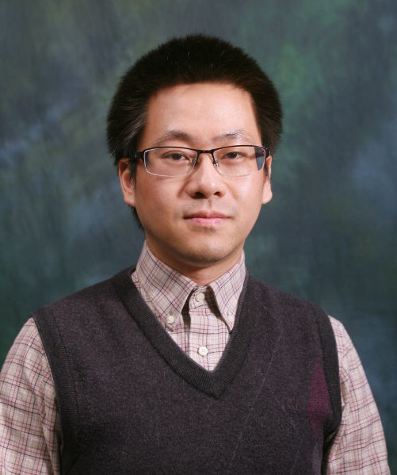

|
 |
| Biography | |
|
Dr. Weihua Gu joined the Department of Electrical Engineering at the Hong Kong Polytechnic University in October 2013. He received his Ph.D. in Civil Engineering from the University of California, Berkeley in 2012. He also received his B.S. and M.Eng. degrees in Civil Engineering from Tsinghua University (Beijing, China) in 2002 and 2005, respectively; and his M.Sc. (in Industrial Engineering & Operations Research) and M.A. (in Economics) degrees from UC Berkeley in 2010 and 2011, respectively. Before joining the Department of Electrical Engineering, he was the Deputy Director of the UC Berkeley Center for Future Urban Transport and a lecturer at the Department of Civil and Environmental Engineering, UC Berkeley. His research interests span over public transportation systems, multimodal urban transportation systems, traffic operations, queueing systems, and infrastructure systems management. He is especially interested in how various transportation modes including cars, buses, rail, and bicycles interact in urban networks, and how to optimally design and manage a multimodal urban transportation system for the benefit of all. He has been serving as the Editorial Board Editor for Transportation Research Part B: Methodological, the Associate Editor for Transportmetrica A: Transport Science and Transportmetrica B: Transport Dynamics, and the Guest Editor of Journal of Advanced Transportation. He is also a member of the Committee on Traffic Flow Theory and Characteristics of the Transportation Research Board and a board member of the Hong Kong Society for Transportation Studies. His awards include an Early Career Award (Hong Kong), A Research Grant Achievement Award (Hong Kong PolyU), a Gordon F. Newell Award for Excellence in Transportation Science (UC Berkeley), a Dwight David Eisenhower Transportation Graduate Fellowship (US DOT), and a Chinese Government Award for Outstanding Self-Financing Students Abroad. |
| Research Interests | ||
Design, operations, and control of public transportation systems | ||
Transportation systems electrification | ||
Multi-modal urban transportation systems | ||
Queueing systems | ||
Infrastructure systems management | ||